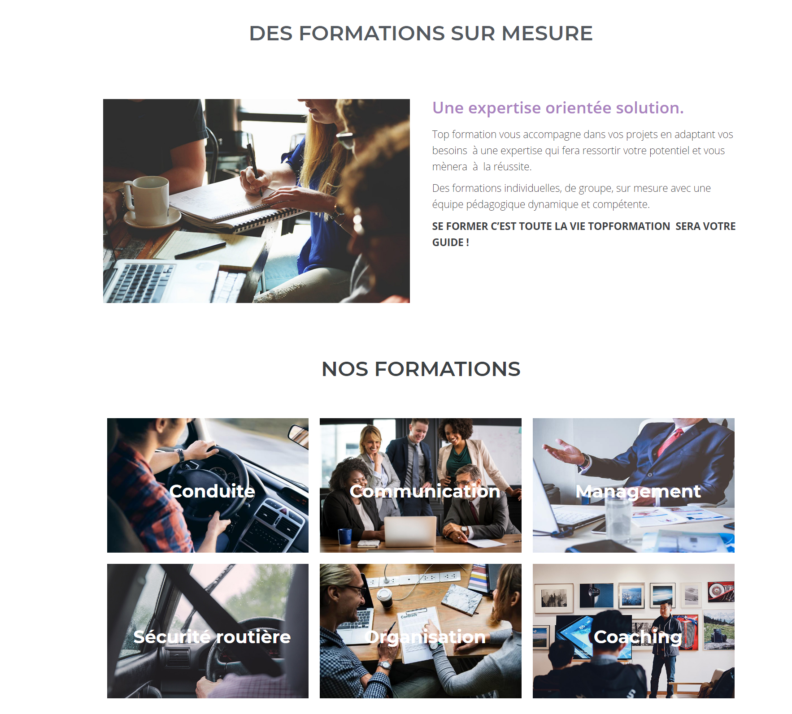
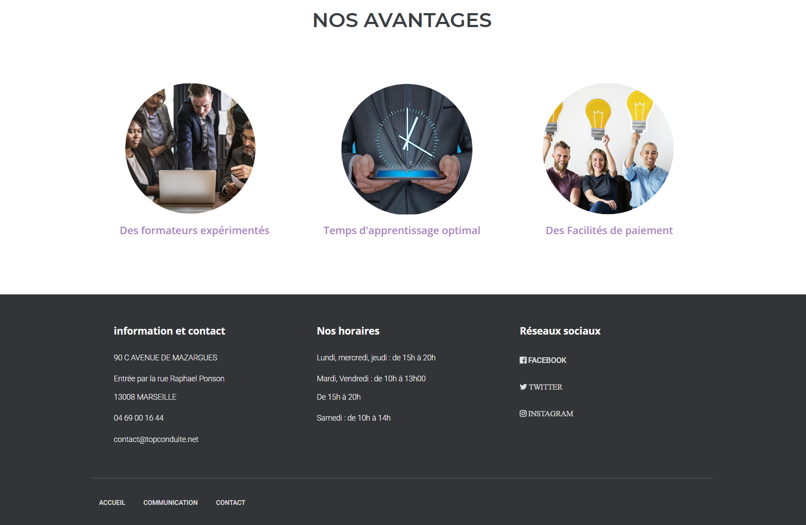
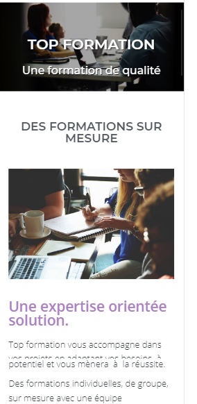

TopFormation
Dans le cadre d’un stage pour valider ma formation mon collaborateurs et moi devions imaginer un site pour des formations pour une auto-école qui devient un organisme de formation. Ce site doit êtreintuiti et ergonimque pour des sénior .
Voir le projetTechnologie utiliseé
Détails du projet
Maquettage
Pour réaliser nous avons commencé par réalisé des wareframe ainsi que des maquettes hautes fidélitées sur photoshop de la page d'Accueil que nous avons préentés à notre tutrice.
Accueil

Acceuil 2
Site
La page d'Acceuil a 5 séctions: header , qui nous sommes , formation , avantage et footer
Accueil
Acceuil 2
Mobile
Pour réaliser ce site mon collaborateur et moi nous nous sommes répartie les tâches. Je me suis principalement occupé d'ajouter les diiferentes fonctionnalitées demandées par nôtre tutrice comme la création d'un sommaire sur les differentes formations. Étant donnés que les formations etaient générées par des CPT (Custome Post Type), l'ajout des fonctionnalitées se faisait dans le code Php. j'ai également paramettré la messagerie de contact et crée les CPT.
Conclusion
Ce projet m'a permis de maitriser l'outils Wordpress ainsi que de m'initier au Php. Il m'a également permis d'integrer une structure dans laquelle mon collabaroteurs et moi etions les seules personnes techniques et donc de travailler en total autononomie.